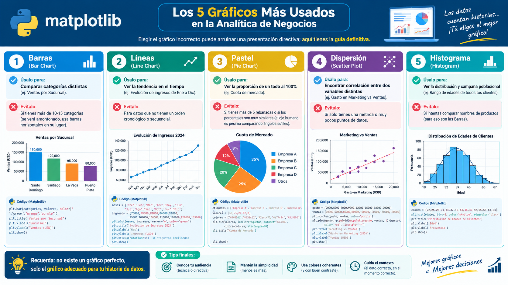

Líder de TI | Desarrollador Full-Stack | Analista de Datos | Ingeniero de IA
Apasionado de la Tecnología, el Análisis de Datos y el Desarrollo de Software. Experto en Integraciones con IA, APIs y Automatizaciones. Especialista en Optimización de Procesos Empresariales y Transformación Digital. Educador | Empoderando a la próxima generación de líderes tecnológicos.
Experiencia Profesional
Enc. Aplicaciones Móviles
Cervecería Vegana S.R.L.
Technical Development Coord.
CNSWARE
Docente de Tecnología
Universidad Dom. O&M
Instructor de Diplomados
CAES Academy
Consultor Independiente
Soluciones de Software & IA
Stack Tecnológico
HTML5 CSS3 JavaScript
React
PHP
Laravel
Python
Power BI
Excel
SQL
C#
.NET
// 00 · Fundamentos Iniciales
💻 ¿Qué es la Programación y qué controla en el mundo digital?
La programación es una disciplina de la
informática que permite diseñar instrucciones, algoritmos y
estructuras lógicas capaces de controlar el comportamiento de un sistema.
Programar no consiste solamente en escribir código. Es el proceso de
analizar problemas,
diseñar soluciones,
procesar información y construir
sistemas capaces de ejecutar tareas de forma
automática, precisa y repetible.
🧠 ¿Qué puede controlar la programación?
Prácticamente todo sistema digital que interactúa con nosotros contiene
software ejecutando instrucciones. La programación permite definir
qué debe hacer un sistema, cuándo debe hacerlo, cómo debe
responder y qué información debe procesar.
⚙️ Sistemas y Hardware
Controla dispositivos, sensores, procesadores, memoria,
periféricos y sistemas embebidos mediante instrucciones de
bajo y alto nivel.
💻 Software y Aplicaciones
Permite construir aplicaciones
Web, Desktop, Mobile, APIs, servicios y sistemas
empresariales.
🗄️ Datos y Bases de Datos
Permite almacenar, consultar, transformar, validar y analizar
grandes cantidades de información mediante
SQL, Python y otros lenguajes.
🌐 Redes y Comunicación
Define cómo las aplicaciones intercambian información mediante
HTTP, APIs, TCP/IP, WebSockets, servicios y protocolos
de comunicación.
🤖 Automatización
Convierte procesos manuales en flujos automáticos capaces de
ejecutar tareas, validar información, generar reportes y
responder ante eventos.
🧠 Inteligencia Artificial
Permite crear sistemas que procesan datos, reconocen patrones,
generan contenido, realizan predicciones y apoyan la toma de
decisiones.
🔬 Programar es resolver problemas mediante lógica
Un programador transforma una necesidad del mundo real en una
solución computacional mediante diferentes niveles de abstracción:
🔎 Análisis:
comprender el problema y sus restricciones.
🧩 Algoritmos:
definir paso a paso cómo resolverlo.
🏗️ Arquitectura:
decidir cómo se organizarán los componentes.
💻 Código:
convertir la solución lógica en instrucciones.
🧪 Pruebas:
detectar errores y validar resultados.
🚀 Despliegue:
llevar la solución a producción.
🔧 Mantenimiento:
corregir, optimizar y evolucionar el sistema.
🧠 ➜ 📐 ➜ 💻 ➜ ⚙️ ➜ 📊 ➜ 🤖
Idea → Algoritmo → Código → Sistema → Datos → Inteligencia
Esa es una de las grandes cadenas de transformación de la
informática moderna.
// 01 · Perfiles Profesionales
👨💻 Los grandes perfiles que construyen el ecosistema digital
La programación, los datos y la inteligencia artificial convergen en
diferentes especialidades. Un profesional puede especializarse en una
de ellas o desarrollar un perfil híbrido.
👨💻 Desarrollador de Software
Diseña, desarrolla, prueba y mantiene aplicaciones y sistemas
informáticos.
Trabaja con
Frontend,
Backend,
APIs, bases de datos, aplicaciones móviles, servicios,
arquitectura y sistemas empresariales.
Construye:
🌐 Web
📱 Mobile
🖥️ Desktop
🔌 APIs
⚙️ Sistemas empresariales
📊 Analista de Datos
Convierte datos operacionales en información útil para responder
preguntas de negocio.
Utiliza
Excel,
SQL,
Power BI, Power Query, Python y herramientas estadísticas.
Diseña y construye la infraestructura necesaria para que los
datos puedan ser recopilados, transportados, transformados,
almacenados y consumidos de forma confiable.
Trabaja con
ETL/ELT,
Data Warehouses, Data Lakes, pipelines, APIs, bases de datos,
cloud y procesamiento distribuido.
Construye:
🔄 Data Pipelines
🗄️ Data Warehouse
🌊 Data Lake
🔌 Integraciones
☁️ Plataformas de datos
🧠 Científico de Datos
Utiliza estadística, programación, matemáticas y Machine
Learning para descubrir patrones y construir modelos
predictivos.
Trabaja con
Python,
estadística, Machine Learning, Deep Learning,
modelos predictivos e IA generativa.
Desarrolla:
📈 Predicciones
🤖 Machine Learning
🧠 Redes neuronales
🔮 Modelos predictivos
⚡ Soluciones de IA
🔗 ¿Cómo se conectan estos cuatro perfiles?
Estos profesionales no trabajan necesariamente de forma aislada.
En un ecosistema de datos moderno pueden formar una cadena de valor
donde cada especialidad aporta una pieza diferente.
👨💻
Software
➜
🏗️
Datos
➜
📊
Análisis
➜
🧠
IA
➜
💡
Decisiones
// 02 · Lenguajes de Programación
🔥 Top 10 Lenguajes de Programación de mayor relevancia
No existe un único lenguaje "mejor". Cada lenguaje está diseñado o
especializado para determinados problemas, plataformas y ecosistemas.
La verdadera habilidad profesional consiste en
elegir la herramienta adecuada para cada problema.
01
Python
🧠 IA · 📊 Datos · 🤖 Automatización · 🌐 Backend · 🔬 Ciencia
La programación es el lenguaje de la transformación digital.
Hoy no basta con saber escribir código.
El profesional moderno necesita comprender
software,
datos,
arquitectura,
automatización e
inteligencia artificial.
🚀
El código construye el sistema.
Los datos explican lo que ocurre.
La IA ayuda a descubrir lo que puede ocurrir.
Y el profesional decide qué hacer con esa información.
// 01 · El Lenguaje Universal
¿Qué es Python y su impacto mundial?
Python es un lenguaje de alto nivel, multiparadigma y de tipado dinámico. Creado en 1991 por Guido van Rossum bajo la filosofía: "La legibilidad cuenta".
🏆 #1 del Mundo: Ranking global TIOBE y PYPL (2025/2026).
🌍 Usado por Gigantes: Google, Netflix, Spotify y NASA.
🧠 Dominio Total: Se aplica en Web, Seguridad, Electrónica, Robótica y es el motor central de la Inteligencia Artificial.
Guido van Rossum
Creador de Python
// 02 · Preparación del Entorno Aislado
Instalación y Configuración del Entorno Seguro (.venv)
La regla de oro del ingeniero profesional es la segregación de dependencias. Nunca instales paquetes de terceros directamente en el Python del sistema operativo; utiliza siempre un Virtual Environment (.venv).
¡CRÍTICO EN WINDOWS! Marca la casilla "Add python.exe to PATH" al inicio de la instalación.
2. Visual Studio Code & Extensión
Descarga el editor desde code.visualstudio.com e instala la extensión oficial de Microsoft Python presionando Ctrl+Shift+X.
3. Protocolo de Consola: Creación y Activación de Entornos en VS Code
Imagina que ya abriste la carpeta de tu proyecto vacío en Visual Studio Code. Para empezar a trabajar como un profesional, necesitamos crear una cápsula protectora (el entorno virtual) usando la terminal integrada del editor. Sigue estos pasos exactos:
Abre la Terminal en VS Code: Ve al menú superior y haz clic en Terminal > New Terminal (o presiona Ctrl + ñ). Verás que se abre un panel negro en la parte inferior.
Crea la cápsula: Copia el comando PASO 1 de abajo, pégalo en esa terminal inferior y presiona Enter. Notarás que a la izquierda aparece una nueva carpeta llamada .venv.
Enciende la cápsula (Activar): En Windows, la terminal por defecto de VS Code es PowerShell. Copia y pega el comando del PASO 2. Sabrás que funcionó porque aparecerá un texto verde (.venv) al inicio de tu línea de comandos.
Instala las herramientas: Ahora que el escudo está arriba, usa pip install (PASO 3) para descargar de Internet las librerías necesarias.
# PASO 1: Crear el entorno virtual en la carpeta actual de VS Code
python -m venv .venv
# PASO 2: Activar el entorno (Selecciona el de tu sistema operativo):
# 👉 Para Windows (Terminal PowerShell en VS Code):
.venv\Scripts\Activate.ps1
# 👉 Para Windows (Si usas CMD tradicional en VS Code):
.venv\Scripts\activate.bat
# 👉 Para macOS / Linux (Macbook o Ubuntu):
source .venv/bin/activate
# PASO 3: Instalar las dependencias del proyecto de golpe
pip install pandas matplotlib streamlit openpyxl requests pyodbc
Tip Experto: Si VS Code te pregunta en una notificación emergente abajo a la derecha: "We noticed a new environment has been created. Do you want to select it for the workspace folder?" haz clic en Yes inmediatamente.
// 03 · Fundamentos Lógicos (Con Ejecución en Navegador)
Haz que Python Piense: Definición y Sintaxis Viva
Aprenderemos Variables, Tipado Dinámico, Estructuras de Control y Bucles. Cada concepto está definido al detalle y acompañado de ejemplos que puedes ejecutar en esta misma pantalla.
1. Variables y Tipado Dinámico en Python
Definición: Una variable es un espacio de memoria RAM reservado para almacenar información.
En Python, el tipado es Dinámico. Esto significa que no necesitas decirle a la computadora qué tipo de dato es (como en C# int edad = 30;). Python lo adivina instantáneamente.
Tipos Comunes:
String (str): Cadena de texto. Va entre comillas ("").
Integer (int): Número entero (positivo o negativo sin decimales).
Float (float): Número decimal (flotante).
Boolean (bool): Valor lógico de Verdadero (True) o Falso (False).
¿Cómo ejecutar? Haz clic en el botón amarillo Probar en el bloque de código abajo. Se abrirá la Terminal Web donde podrás ver, editar y ejecutar el código usando el botón verde.
# Problema: Guardar y auditar los datos de un paciente
nombre_paciente = "Juan Pérez" # str
edad_paciente = 45 # int
peso_kg = 80.5 # float
tiene_seguro = True # bool
# Imprimir los valores y validar sus tipos internamente
print("--- DATOS DEL PACIENTE ---")
print(f"Nombre: {nombre_paciente} | Tipo: {type(nombre_paciente)}")
print(f"Edad: {edad_paciente} | Tipo: {type(edad_paciente)}")
print(f"Peso (Kg): {peso_kg} | Tipo: {type(peso_kg)}")
print(f"Seguro Activo: {tiene_seguro} | Tipo: {type(tiene_seguro)}")
2. Operadores Matemáticos Todos los Niveles
Definición: Símbolos que instruyen a Python a realizar cálculos matemáticos.
Operadores: Suma +, Resta -, División /, Multiplicación *, Promedio (Suma / cantidad), Potencia **, y Módulo % (El residuo de una división, súper útil para saber si un número es par o impar).
Caso Práctico: Calculadora Estática
Problema: Se requiere un script que realice las 4 operaciones básicas inmediatamente al ejecutarse. Conceptos Clave: Asignación dura (hardcoding) de variables numéricas y uso de f-strings format para interpolar variables. Valor del Ejercicio: Fundamentar la sintaxis matemática pura de Python libre de distracciones.
Problema: El sistema debe adaptarse a cualquier usuario, preguntándole dinámicamente qué números desea calcular. Conceptos Clave: Función input() para entrada de datos (I/O) y casting float() para convertir texto a decimal. Valor del Ejercicio: Enseñar la interactividad real del software. Un programa sin datos del usuario es un programa ciego.
# Ejemplo 2: Calculadora Interactiva (Pidiendo datos)
print("--- CALCULADORA INTERACTIVA ---")
# input() pedirá los números en pantalla al ejecutar.
num1 = float(input("Ingresa el primer número: "))
num2 = float(input("Ingresa el segundo número: "))
print(f"\n✅ Valores ingresados: A = {num1}, B = {num2}\n")
print(f"Suma: {num1 + num2}")
print(f"Resta: {num1 - num2}")
print(f"Multiplicación: {num1 * num2}")
print(f"División: {num1 / num2}")
Caso Práctico: Finanzas y Promedios
Problema: Un analista necesita calcular las ventas totales y el promedio de ventas trimestrales (Q1, Q2, Q3) de una sucursal. Conceptos Clave: Asignación múltiple en una sola línea y control de decimales en strings :.2f. Valor del Ejercicio: Preparación directa para el análisis de datos (Data Science) aplicados a negocios reales.
Caso Práctico: Operadores Especiales (Potencia y Módulo)
Problema: Un criptógrafo necesita elevar números grandes a la potencia, y un sistema bancario necesita saber si el ID de un cajero es par o impar. Conceptos Clave: Operador de Potencia ** y Operador de Módulo % (Residuo). Valor del Ejercicio: Dominar operadores esenciales para algoritmos matemáticos complejos y bucles iterativos.
# Ejemplo 4: Potencias y Módulo (Saber si es Par o Impar)
base, exponente = 2, 8
potencia = base ** exponente # 2 elevado a 8 = 256
print(f"2 elevado a la 8 es: {potencia}\n")
numero = 15
print(f"El módulo de {numero} / 2 es {numero % 2}.")
print("👉 Regla de oro: Si el residuo es 1 es IMPAR, si es 0 es PAR.")
3. Comparadores y Estructuras de Control (If / Elif / Else)
Definición Comparadores: Comparan valores y devuelven True/False. Igual ==, Diferente !=, Mayor >, Menor <, Mayor o igual >=, Menor o igual <=.
Control (if/elif/else): Le da inteligencia a tu programa. Si la condición se cumple, entra a ese bloque de código.
Caso Práctico: El Motor de la Verdad (Comparadores)
Problema: Antes de tomar decisiones, la computadora necesita evaluar si algo es cierto o falso con respecto al mundo real. Conceptos Clave: Operadores de Relación (==, !=, >, <, >=, <=) y el retorno de valores Booleanos. Valor del Ejercicio: Todo sistema de control de acceso e Inteligencia Artificial se basa en estas decisiones lógicas en su capa más baja.
# Ejemplo 1: Operadores de Comparación en Acción
limite_velocidad = 80
velocidad_actual = 95
print("--- EVALUACIÓN DE RADARES DE TRÁNSITO ---")
print(f"Velocidad Registrada: {velocidad_actual} km/h")
print(f"Límite Establecido: {limite_velocidad} km/h\n")
print(f"¿Excedió el límite? ({velocidad_actual} > {limite_velocidad}):", velocidad_actual > limite_velocidad)
print(f"¿Iba a una velocidad menor? ({velocidad_actual} < {limite_velocidad}):", velocidad_actual < limite_velocidad)
print(f"¿Iba exactamente al límite? ({velocidad_actual} == {limite_velocidad}):", velocidad_actual == limite_velocidad)
print(f"¿Velocidad era diferente al límite? ({velocidad_actual} != {limite_velocidad}):", velocidad_actual != limite_velocidad)
Caso Práctico: Simulación de Login Bancario (if / else)
Problema: Un sistema bancario debe permitir el acceso SOLO a usuarios con las credenciales correctas. Conceptos Clave: Estructura de Control Bifurcada (if y else), Operador de Igualdad == y Operador Lógico and. Valor del Ejercicio: Es el pilar absoluto de la Ciberseguridad Básica y Validación de Usuarios en el desarrollo de software.
# Ejemplo 2: Sistema de Login Seguro
print("--- ACCESO BANCARIO ---")
usuario = input("Ingresa tu usuario (pista: admin): ")
clave = input("Ingresa tu contraseña (pista: 1234): ")
# Base de datos simulada
usuario_db = "admin"
clave_db = "1234"
# Condicional Múltiple (Ambas cosas deben ser ciertas)
if usuario == usuario_db and clave == clave_db:
print("\n✅ ACCESO CONCEDIDO: Bienvenido a tu cuenta bancaria.")
else:
print("\n❌ ACCESO DENEGADO: Credenciales incorrectas, contacte soporte.")
Caso Práctico: Lógica Multi-Ruta de RRHH (elif)
Problema: El departamento de Recursos Humanos necesita clasificar automáticamente el nivel salarial de los empleados según su puntaje de desempeño. Conceptos Clave: Estructura elif para enlazar múltiples evaluaciones jerárquicas. Valor del Ejercicio: Enseña cómo ramificar la lógica de negocio en más de 2 caminos sin tener que anidar código innecesaria y complejamente.
# Ejemplo 3: Evaluación de Rendimiento Laboral
puntaje = float(input("Ingresa el puntaje del empleado (0 a 100): "))
print("\n--- RESULTADO DE LA EVALUACIÓN ---")
if puntaje >= 90:
print("🌟 Nivel: EXCELENTE (Aplica para aumento del 20%)")
elif puntaje >= 75:
print("✅ Nivel: BUENO (Aplica para bono estándar)")
elif puntaje >= 60:
print("⚠️ Nivel: REGULAR (Requiere plan de mejora)")
else:
print("❌ Nivel: DEFICIENTE (En riesgo de despido)")
Caso Práctico: Introducción al 'Switch' (match-case básico)
Problema: Se necesita traducir el número del día de la semana (1 al 7) a su nombre en texto de manera rápida y directa. Conceptos Clave: Uso simple de match - case para mapeos exactos y agrupación con | (OR). Valor del Ejercicio: Entender la sintaxis básica de esta nueva estructura antes de aplicarla en menús o lógica más compleja.
# Ejemplo 4: Días de la semana con Match-Case (Switch Básico)
numero_dia = input("Ingresa un número del 1 al 7: ")
match numero_dia:
case "1":
print("📅 Es Lunes (Inicio de semana laboral)")
case "2":
print("📅 Es Martes")
case "3":
print("📅 Es Miércoles (Mitad de semana)")
case "4":
print("📅 Es Jueves")
case "5":
print("🎉 Es Viernes (¡Por fin!)")
case "6" | "7":
# Podemos agrupar múltiples casos en una sola línea usando la barra vertical (|)
print("🛌 ¡Es Fin de Semana! Tiempo de descansar.")
case _:
print("❌ Número inválido. La semana solo tiene 7 días.")
Caso Práctico: 'Switch' Avanzado (Menú Interactivo)
Problema: Un cajero automático debe ejecutar diferentes acciones exactas según la opción del menú elegida, sin hacer una cadena repetitiva y fea de if/elifs. Conceptos Clave: La estructura match - case (Implementada en Python 3.10+ como el equivalente al Switch de Java/C#). Valor del Ejercicio: Te pone a la vanguardia de las características modernas de Python, creando código extremadamente legible en interfaces y menús de consola.
# Ejemplo 5: Menú de Cajero Automático usando Match-Case
print("--- MENÚ DEL CAJERO ---")
print("1. Consultar Balance")
print("2. Retirar Efectivo")
print("3. Cambiar Pin")
print("4. Hablar con Asesor")
opcion = input("Selecciona una opción del menú (1 al 4): ")
# match evalúa la opción exacta, y case ejecuta el bloque correspondiente
match opcion:
case "1":
print("\n💰 Tu balance actual es: $1,500.00")
case "2":
print("\n💵 Entregando efectivo... Por favor, retíralo.")
case "3":
print("\n🔒 Ingresa tu pin actual para cambiarlo.")
case "4":
print("\n🎧 Transfiriendo a un Asesor, por favor espera...")
case _:
# El case _ funciona como 'default' o 'else' para cualquier otra cosa
print("\n⚠️ OPCIÓN INVÁLIDA. Intenta de nuevo seleccionando del 1 al 4.")
4. Bucles y Automatización Continua (Ciclos)
Bucle For (y Foreach): Se usa cuando sabes exactamente cuántas veces se repetirá algo o quieres recorrer una colección (ej. un rango de 1 al 100, o una lista de elementos). En Python, el for actúa de forma nativa como un foreach. Bucle While: Se usa cuando NO sabes cuántas veces se repetirá, ya que se seguirá repitiendo MIENTRAS una condición sea verdadera. Bucle Do-While: Python no tiene la palabra do-while, pero se emula de forma elegante usando while True: y rompiendo el ciclo con la orden break.
Caso Práctico: Bucle While (Números Naturales hasta el 100)
Problema: Contar e imprimir los números naturales del 1 al 100 de forma ascendente. Lógica del Algoritmo: Iniciamos una variable en 1 y usamos un bucle para imprimirla y sumarle +1 en cada paso, deteniéndonos justo cuando sobrepase el 100. Conceptos Clave: Estructura while, contador, y el parámetro end=" " en el print para imprimir en la misma línea. Valor del Ejercicio: Es el ciclo de control más fundamental. Enseña a inicializar variables y evitar bucles infinitos.
# Ejemplo 1: Imprimir números del 1 al 100 usando While
print("--- NÚMEROS NATURALES HASTA EL 100 ---")
numero = 1
# Mientras el número sea menor o igual a 100, repite:
while numero <= 100:
# Usamos end=", " para que no haga un salto de línea por cada número
print(numero, end=", ")
numero += 1 # MUY IMPORTANTE: Aumentar el contador para no crear un bucle infinito
print("\n✅ Conteo finalizado.")
Caso Práctico: Simulación de Do-While (Pares e Impares al 100)
Problema: Clasificar números del 1 al 100 en pares e impares de forma visual, asegurando que el código se ejecute AL MENOS una vez (simulando un Do-While). Lógica Matemática: ¿Cómo sabe la computadora si un número es par? Usando el operador Módulo (%) que calcula el residuo. Si divides un número entre 2 y sobra 0, es PAR (n % 2 == 0). Si sobra 1, es IMPAR. Conceptos Clave: Bucle infinito while True:, listas [], operador de módulo % y la instrucción break para escapar. Valor del Ejercicio: Enseña a traducir lógica matemática pura al lenguaje de programación y dominar el patrón Do-While que Python no trae por defecto.
# Ejemplo 2: Separar Pares e Impares hasta 100 (Estilo Do-While)
print("--- PARES E IMPARES AL 100 ---")
n = 1
pares_encontrados = []
impares_encontrados = []
# while True simula el 'do'. Ejecuta el bloque infinitamente hasta encontrar el 'break'
while True:
if n % 2 == 0:
pares_encontrados.append(str(n))
else:
impares_encontrados.append(str(n))
n += 1
# Esta es nuestra condición 'while' al final del ciclo
if n > 100:
break # ¡Rompe el bucle!
print("🔵 NÚMEROS PARES:")
print(", ".join(pares_encontrados))
print("\n🔴 NÚMEROS IMPARES:")
print(", ".join(impares_encontrados))
Caso Práctico: Bucle For (Números Primos hasta el 100)
Problema: Encontrar e imprimir todos los números primos (solo divisibles por 1 y por sí mismos) del 1 al 100. Lógica Matemática: Para comprobar si un número es primo, intentamos dividirlo por todos los números menores a él. Si alguna división da residuo exacto (0), significa que tiene otro divisor y por ende NO es primo. Conceptos Clave:for con range(), bucles anidados, y banderas Booleanas (flags). Valor del Ejercicio: Es una prueba clásica de lógica matemática que evalúa el dominio de bucles unos dentro de otros.
# Ejemplo 3: Números Primos del 1 al 100
print("--- NÚMEROS PRIMOS DEL 1 AL 100 ---")
# Recorremos del 2 al 100 (El 1 no se considera primo)
for numero in range(2, 101):
es_primo = True
# Comprobamos si tiene algún divisor aparte de 1 y él mismo
for divisor in range(2, int(numero ** 0.5) + 1):
if numero % divisor == 0:
es_primo = False
break # Si encontramos un divisor, ya no es primo, dejamos de buscar
if es_primo:
print(numero, end=", ")
Caso Práctico: Foreach Iterativo (Recorriendo Colecciones)
Problema: Extraer e imprimir los nombres de una lista de empleados uno por uno. Lógica del Algoritmo: Python se encarga de saber cuántos elementos tiene la lista. En cada repetición, extrae el siguiente elemento y lo guarda en la variable automáticamente, hasta que no queden más. Conceptos Clave: El bucle for in que itera directamente sobre los elementos sin usar índices numéricos. Valor del Ejercicio: Es el bucle más utilizado en Data Science para recorrer filas, archivos y bases de datos.
# Ejemplo 4: Bucle Foreach iterando una lista
empleados = ["Juancito Peña", "Elon Musk", "Ada Lovelace", "Bill Gates"]
print("--- REPORTE DE EMPLEADOS ---")
# Literalmente: 'Por cada persona en la lista empleados, haz esto'
for persona in empleados:
print(f"👤 Procesando pago para: {persona}")
Caso Práctico: Generador de Tablas (For + Input)
Problema: Pedirle al usuario un número y generar automáticamente toda su tabla de multiplicar. Lógica del Algoritmo: Multiplicamos el número elegido por el usuario por una variable que va aumentando de 1 en 1 (del 1 al 12) generada automáticamente por la función range(1, 13). Conceptos Clave: Inyección de entradas (input) directamente en un bucle for range(). Valor del Ejercicio: Enseña la interactividad dinámica y la generación de reportes basados en la petición del cliente.
# Ejemplo 5: Tabla de Multiplicar interactiva
tabla = int(input("¿Qué tabla de multiplicar deseas generar?: "))
print(f"\n--- TABLA DEL {tabla} ---")
# Genera del 1 al 12 (el 13 no se incluye)
for multiplicador in range(1, 13):
res = tabla * multiplicador
print(f"{tabla} x {multiplicador} = {res}")
Caso Práctico: Mega Reporte (Todas las Tablas Anidadas)
Problema: Generar e imprimir un reporte masivo con TODAS las tablas de multiplicar (del 1 al 12) de un solo golpe. Lógica del Algoritmo: El primer bucle (externo) elige la tabla en la que estamos (del 1 al 12). Por CADA repetición de ese bucle, el segundo bucle (interno) arranca y cuenta del 1 al 12 para hacer las multiplicaciones. Conceptos Clave: Bucles For Anidados (Un bucle dentro de otro bucle). Valor del Ejercicio: Crucial para entender cómo funcionan las matrices bidimensionales, las tablas de bases de datos y los píxeles de una pantalla.
# Ejemplo 6: Todas las Tablas (Bucles Anidados)
print("Generando el Mega Reporte Matemático...\n")
# Bucle externo: Controla qué tabla estamos haciendo
for tabla_actual in range(1, 13):
print(f"--- TABLA DEL {tabla_actual} ---")
# Bucle interno: Hace las 12 multiplicaciones de esa tabla
for multiplicador in range(1, 13):
res = tabla_actual * multiplicador
print(f"{tabla_actual} x {multiplicador} = {res}")
print("") # Salto de línea para separar las tablas
Caso Práctico: Algoritmo de Fibonacci (While)
Problema: Recrear la famosa sucesión matemática que describe los patrones de la naturaleza (como las ramas de los árboles o galaxias). Lógica Matemática: Empezamos con 0 y 1. El siguiente número SIEMPRE es la suma de los dos anteriores (0+1=1, luego 1+1=2, luego 1+2=3, luego 2+3=5...). Conceptos Clave: Asignación múltiple simultánea (a, b = b, a+b). Valor del Ejercicio: Es el examen técnico por excelencia en las entrevistas de programación.
# Ejemplo 7: Sucesión de Fibonacci
# La regla: Cada número es la suma de los 2 anteriores
a, b = 0, 1
contador = 0
limite = 15 # Extraeremos 15 números
print("--- SUCESIÓN DE FIBONACCI ---")
while contador < limite:
print(a, end=" ➡️ ")
a, b = b, a + b # MAGIA DE PYTHON: a toma el valor de b, y b toma el de a+b
contador += 1
print("Fin de la sucesión.")
5. Listas, Arreglos y Diccionarios
Listas (Arrays): Guardan múltiples valores en orden usando índices [0, 1, 2...]. Ideales para colecciones mutables (lista de libros).
Diccionarios: Guardan información agrupada por pares Clave: Valor. Perfectos para bases de datos JSON (diccionario de frutas y precios).
# 1. LISTA DE LIBROS
libros = ["Hábitos Atómicos", "El Arte de la Guerra", "Clean Code"]
libros.append("1984") # Añadir nuevo elemento
print("Mis libros:", libros)
print("El segundo libro es:", libros[1]) # Índice 1
# 2. DICCIONARIO DE FRUTAS
precios_frutas = {
"Manzana": 1.25,
"Fresa": 3.50,
"Banana": 0.80
}
print("\nEl precio de la Fresa es: $", precios_frutas["Fresa"])
print("Todas las frutas disponibles:", list(precios_frutas.keys()))
// 04 · Ecosistema Analítico
Librerías Estrella: Pandas, Matplotlib y Streamlit
Antes de pasar a los casos de uso empresariales, conoce a la "Santísima Trinidad" de los Datos en Python. Tres herramientas fundamentales que transforman simples números en aplicaciones web y dashboards interactivos.
🐼 Pandas (Datos)
El "Excel con esteroides". Permite procesar millones de filas en segundos, limpiar información sucia y calcular KPIs con una sola línea de código.
📊 Matplotlib (Gráficos)
El motor de renderizado. Transforma los números de Pandas en Dashboards visuales, mapas de calor y las 5 gráficas universales de negocios.
👑 Streamlit (Web)
La revolución del Frontend. Convierte tus análisis de Python en páginas web interactivas reales sin necesidad de saber HTML, CSS o JavaScript.
Ejemplo 1: Uso de Datos con Pandas
Crear un DataFrame (una tabla estilo Excel) a partir de un diccionario estructurado es extremadamente fácil.
import pandas as pd
# 1. Creamos la data cruda (Diccionario)
datos = {
"Producto": ["Zapatos", "Camisas", "Pantalones", "Relojes"],
"Stock": [50, 120, 85, 30],
"Precio": [2500, 1200, 1800, 5000]
}
# 2. Pandas lo transforma en una Tabla Inteligente (DataFrame)
df = pd.DataFrame(datos)
print("--- INVENTARIO CON PANDAS ---")
print(df)
print("\nKPI -> Promedio de Precios: RD$", df["Precio"].mean())
Ejemplo 2: Los 5 Gráficos Más Usados (Matplotlib)
Una demostración de cómo generar visualmente las 5 herramientas gráficas más solicitadas en la Analítica de Negocios. Elegir el gráfico incorrecto puede arruinar una presentación directiva; aquí tienes la guía definitiva:
📊 1. Barras (Bar Chart): Úsalo para comparar categorías distintas (ej. Ventas por Sucursal). Evítalo: Si tienes más de 10-15 categorías (se verá amontonado, usa barras horizontales en su lugar).
📈 2. Líneas (Line Chart): Úsalo para ver la tendencia en el tiempo (ej. Evolución de ingresos de Ene a Dic). Evítalo: Para datos que no tienen un orden cronológico o secuencial.
🍕 3. Pastel (Pie Chart): Úsalo para ver la proporción de un todo al 100% (ej. Cuota de mercado). Evítalo: Si tienes más de 5 rebanadas o si los porcentajes son muy similares (el ojo humano es pésimo comparando ángulos sutiles).
📍 4. Dispersión (Scatter Plot): Úsalo para encontrar correlación entre dos variables distintas (ej. Gasto en Marketing vs Ventas obtenidas). Evítalo: Si solo tienes una métrica o muy pocos puntos de datos.
📉 5. Histograma (Histogram): Úsalo para ver la distribución y campana poblacional (ej. Rango de edades de todos tus clientes). Evítalo: Si intentas comparar nombres de productos (para eso son las Barras).

import matplotlib.pyplot as plt
import numpy as np
# Creamos un lienzo de 2 filas y 3 columnas
fig, axs = plt.subplots(2, 3, figsize=(14, 8))
meses = ["Ene", "Feb", "Mar", "Abr"]
ventas = [10, 25, 15, 30]
# 1. BARRAS (Comparar categorías)
axs[0,0].bar(meses, ventas, color="#3498db")
axs[0,0].set_title("1. Barras")
# 2. LÍNEAS (Tendencia temporal)
axs[0,1].plot(meses, ventas, color="#e74c3c", marker="o", linewidth=2)
axs[0,1].set_title("2. Líneas")
# 3. PASTEL (Proporción del Todo)
axs[0,2].pie(ventas, labels=meses, autopct="%1.1f%%", colors=["#2ecc71", "#f1c40f", "#e67e22", "#9b59b6"])
axs[0,2].set_title("3. Pastel")
# 4. DISPERSIÓN / SCATTER (Correlación)
visitas = [100, 250, 140, 310]
axs[1,0].scatter(visitas, ventas, color="#16a085", s=100)
axs[1,0].set_title("4. Dispersión")
# 5. HISTOGRAMA (Distribución de densidad poblacional)
edades = np.random.normal(35, 10, 100) # 100 edades aleatorias para la campana
axs[1,1].hist(edades, bins=10, color="#8e44ad", edgecolor="black")
axs[1,1].set_title("5. Histograma")
axs[1,2].axis('off') # Escondemos el sexto cuadrante porque solo hay 5 gráficos
plt.tight_layout()
plt.savefig("demo_5_graficos.png", bbox_inches='tight')
plt.show()
print("✅ Los 5 Gráficos de Negocios renderizados exitosamente.")
Ejemplo 3: Aplicaciones Web (Streamlit)
Streamlit opera en servidores reales, por lo que no se ejecuta en la web. Para correrlo en tu Visual Studio Code sigue estos dos pasos clave:
1. Instalar: Abre la terminal de VS Code y escribe pip install streamlit pandas
2. Levantar el Servidor: Escribe exactamente python -m streamlit run app.py (usar -m previene errores de comandos no reconocidos en Windows).
# Recuerda guardar este archivo como "app.py"
# Ejecuta en tu terminal: python -m streamlit run app.py
import streamlit as st
import pandas as pd
# Titulo principal de la Página Web
st.title("📊 Mi Primer Dashboard Web Interactivo")
# 1. Cargar Datos a un DataFrame
df = pd.DataFrame({
"Producto": ["Laptop", "Monitor", "Mouse"],
"Ventas": [150000, 45000, 8000]
})
# 2. Widget Interactivo: Un menú desplegable
opcion = st.selectbox("Selecciona un Producto para filtrar:", df["Producto"])
# 3. Lógica de Filtrado automático
filtro = df[df["Producto"] == opcion]
st.write(f"### Ventas detalladas para {opcion}:")
st.dataframe(filtro)
# 4. Gráfico web automático
st.write("### Comparativa de Ventas Generales")
st.bar_chart(df.set_index("Producto"))
// 05 · Casos de Estudio Reales
Análisis de Datos, Excel, KPIs y APIs
Planteamiento de 3 ejemplos reales utilizando Datos, Pandas (simulando Excel) y consumo simulado de APIs web (Clima, Finanzas, Sentiment).
Caso 1: Análisis de Excel con Pandas
Planteamiento: Tienes un archivo Excel con las ventas y los gastos mensuales. Necesitas calcular el beneficio, mostrar una tabla limpia y extraer el KPI del mejor mes, para finalmente graficarlo.
import pandas as pd
import matplotlib.pyplot as plt
import os
archivo_csv = "Reporte_Financiero_Anual.csv"
# =====================================================================
# 1. SETUP DE CONTINGENCIA (Para que funcione en la Web y en VS Code)
# Si no has descargado el archivo a tu carpeta, Python lo genera solo.
# =====================================================================
if not os.path.exists(archivo_csv):
datos_simulados = {
"Mes": ["Ene", "Feb", "Mar", "Abr", "May", "Jun", "Jul", "Ago", "Sep", "Oct", "Nov", "Dic"],
"Ingresos": [15000, 18000, 12000, 25000, 22000, 28000, 31000, 29000, 24000, 26000, 35000, 42000],
"Gastos": [9000, 9500, 10000, 11000, 10500, 12000, 13500, 13000, 11500, 12500, 15000, 18000],
"Meta_Ventas": [14000, 15000, 15000, 20000, 20000, 25000, 25000, 25000, 25000, 25000, 30000, 35000]
}
pd.DataFrame(datos_simulados).to_csv(archivo_csv, index=False)
# =====================================================================
# 2. LECTURA REAL DEL ARCHIVO (Como lo haría un Analista de Datos)
# =====================================================================
df = pd.read_csv(archivo_csv)
# 2. TRANSFORMACIÓN Y LÓGICA DE NEGOCIOS (Sin usar bucles for)
df["Beneficio_Neto"] = df["Ingresos"] - df["Gastos"]
# Variable booleana (Verdadero/Falso) para saber si pasamos la meta
df["Cumplio_Meta"] = df["Ingresos"] >= df["Meta_Ventas"]
# 3. ANÁLISIS E IMPRESIÓN DE DATOS
print("--- REPORTE FINANCIERO ANUAL (12 MESES) ---")
print(df.to_string(index=False))
# KPIs AVANZADOS
ingreso_total = df['Ingresos'].sum()
beneficio_total = df['Beneficio_Neto'].sum()
meses_exito = df['Cumplio_Meta'].sum() # Suma cuántos son True
mejor_mes = df.loc[df['Beneficio_Neto'].idxmax()]['Mes']
print("\n📊 INSIGHTS EJECUTIVOS (KPIs):")
print(f"💰 Ingresos Totales (Año): ${ingreso_total:,.2f}")
print(f"📈 Beneficio Neto Total: ${beneficio_total:,.2f} (Margen: {(beneficio_total/ingreso_total)*100:.1f}%)")
print(f"🏆 Mes Estrella: {mejor_mes} (Lideró con ${df['Beneficio_Neto'].max():,.2f})")
print(f"🎯 Cumplimiento Estratégico: Se superó la meta en {meses_exito} de 12 meses.")
# 4. DASHBOARD VISUAL (2 Gráficos en 1 Lienzo)
fig, (ax1, ax2) = plt.subplots(1, 2, figsize=(12, 5))
# Gráfico 1: Ingresos vs Beneficios (Barras Agrupadas)
x = range(len(df["Mes"]))
ax1.bar([i - 0.2 for i in x], df["Ingresos"], width=0.4, color="#3498db", label="Ingresos")
ax1.bar([i + 0.2 for i in x], df["Beneficio_Neto"], width=0.4, color="#2ecc71", label="Beneficio")
ax1.set_xticks(x)
ax1.set_xticklabels(df["Mes"])
ax1.set_title("Ingresos vs Beneficios (Anual)", fontweight='bold')
ax1.legend()
ax1.grid(axis='y', linestyle='--', alpha=0.3)
# Gráfico 2: Ingresos vs Meta Proyectada (Líneas de Tendencia)
ax2.plot(df["Mes"], df["Ingresos"], color="#f39c12", marker="o", linewidth=2.5, label="Ventas Reales")
ax2.plot(df["Mes"], df["Meta_Ventas"], color="#e74c3c", linestyle="--", linewidth=2, label="Meta Proyectada")
ax2.set_title("Rendimiento vs Meta Estratégica", fontweight='bold')
ax2.fill_between(df["Mes"], df["Ingresos"], df["Meta_Ventas"], where=(df["Ingresos"] >= df["Meta_Ventas"]), interpolate=True, color='green', alpha=0.1)
ax2.legend()
ax2.grid(axis='y', linestyle='--', alpha=0.3)
# 5. EXPORTACIÓN AUTOMÁTICA
plt.tight_layout()
plt.savefig("dashboard_financiero.png", bbox_inches='tight')
plt.show() # 🖥️ Abre la ventana emergente con el gráfico (VS Code)
df.to_csv("Reporte_Financiero_Anual.csv", index=False)
print("\n✅ ¡Dashboard de 2 Gráficos y Dataset Excel (CSV) inyectados con éxito!")
Caso 2: API de Mercado (Top 10 Criptomonedas)
Planteamiento: Conectarnos a los servidores reales de Binance, descargar el precio de todas las criptomonedas (miles de registros), y usar un bucle y un filtro para imprimir únicamente las 10 más importantes formateadas como una tabla financiera.
import pyodide.http
import pandas as pd
import matplotlib.pyplot as plt
# 1. CONEXIÓN A APIS EXTERNAS EN TIEMPO REAL (Binance)
url = "https://api.binance.com/api/v3/ticker/price"
respuesta = await pyodide.http.pyfetch(url)
api_binance = await respuesta.json()
# 2. PROCESAMIENTO MATEMÁTICO (Top 20 del mundo)
# Filtramos de los miles de registros, solo aquellos que compiten contra el Dólar (USDT)
mercado = [c for c in api_binance if c["symbol"].endswith("USDT")]
# Ordenamos de mayor a menor precio
mercado.sort(key=lambda x: float(x["price"]), reverse=True)
top_20 = mercado[:20]
# 3. ANÁLISIS ESTRUCTURADO CON PANDAS
df = pd.DataFrame(top_20)
# Limpiamos los nombres (ej: BTCUSDT -> BTC)
df["symbol"] = df["symbol"].str.replace("USDT", "")
df["price"] = df["price"].astype(float)
df.rename(columns={"symbol": "Criptomoneda", "price": "Precio_USD"}, inplace=True)
# Imprimimos tabla
print("--- MERCADO CRIPTO EN VIVO (BINANCE) ---")
print(df.to_string(index=False))
# KPIs Ejecutivos
precio_promedio = df["Precio_USD"].mean()
mas_cara = df.iloc[0]["Criptomoneda"]
print("\n📊 INSIGHTS DEL MERCADO (Top 20):")
print(f"💎 Criptomoneda más valiosa: {mas_cara}")
print(f"📉 Precio Promedio del Top 20: ${precio_promedio:,.2f} USD")
# 4. DASHBOARD VISUAL (Gráfico de Barras con Escala Logarítmica)
plt.figure(figsize=(10, 5))
# Invertimos para que la más cara quede arriba en el gráfico
df_graf = df.sort_values(by="Precio_USD", ascending=True)
plt.barh(df_graf["Criptomoneda"], df_graf["Precio_USD"], color="#f1c40f", edgecolor="#000")
# Usamos escala Logarítmica porque BTC es inmensamente más grande que las demás
plt.xscale('log')
plt.title("Top 20 Criptomonedas por Precio (Escala Logarítmica)", fontweight='bold')
plt.xlabel("Precio en USD (Log)")
plt.grid(axis='x', linestyle='--', alpha=0.5)
# 5. EXPORTACIÓN Y RENDERIZADO
plt.tight_layout()
plt.savefig("dashboard_cripto.png", bbox_inches='tight')
plt.show() # 🖥️ Abre la ventana emergente con el gráfico (VS Code)
# Descargamos el reporte de precios a Excel
df.to_csv("Top20_Criptomonedas_Binance.csv", index=False)
print("\n✅ ¡Dashboard Logarítmico y Archivo CSV inyectados y listos!")
Caso 3: Inteligencia de Negocios (NLP y Dashboards)
Planteamiento: Analizar una base de datos de reseñas de clientes utilizando Pandas para categorizar automáticamente los sentimientos, cruzar los datos por temáticas (Producto, Envío, Precio) y generar un Dashboard visual con 2 gráficos estadísticos.
import pandas as pd
import matplotlib.pyplot as plt
import os
archivo_csv = "Base_Sentimientos_NLP.csv"
# =====================================================================
# 1. SETUP DE CONTINGENCIA (Para Web y VS Code)
# =====================================================================
if not os.path.exists(archivo_csv):
import random
nombres = ["Carlos", "Ana", "Luis", "Marta", "Pedro", "Sofía", "Diego", "Laura", "Jorge", "Elena"]
temas = ["Producto", "Servicio", "Envío", "Precio"]
pool_comentarios = {
"Producto": [("Cámara brutal", 10), ("Batería dura poco", 8), ("Cumple su función", 6), ("Se sobrecalienta", 3)],
"Servicio": [("Muy amables", 10), ("Duda resuelta", 8), ("Poco capacitados", 5), ("Pésimo soporte", 2)],
"Envío": [("Llegó antes", 10), ("Todo en orden", 9), ("Tardó 3 días más", 6), ("Caja rota", 1)],
"Precio": [("Ganga total", 10), ("Valió cada centavo", 9), ("Un poco caro", 5), ("Es un robo", 1)]
}
opiniones = []
for _ in range(100):
tema = random.choice(temas)
comentario, score = random.choice(pool_comentarios[tema])
opiniones.append({"cliente": random.choice(nombres), "score": score, "tema": tema, "comentario": comentario})
pd.DataFrame(opiniones).to_csv(archivo_csv, index=False)
# =====================================================================
# 2. LECTURA REAL DEL ARCHIVO (Analítica NLP)
# =====================================================================
df = pd.read_csv(archivo_csv)
print("--- ANÁLISIS DE SENTIMIENTOS MASIVO (NLP) ---")
# 2. INTELIGENCIA ARTIFICIAL BÁSICA (Clasificación)
# Creamos una función que clasifica la lealtad según el estándar mundial NPS
def clasificar_nps(score):
if score >= 9: return "Promotor 🟢"
elif score >= 7: return "Neutro 🟡"
else: return "Detractor 🔴"
# Aplicamos la función masivamente a toda la base de datos sin usar bucles
df["Sentimiento"] = df["score"].apply(clasificar_nps)
# Imprimimos la tabla formateada para que el usuario la vea (Resumida por Pandas)
print(df[["cliente", "Sentimiento", "tema"]])
# 3. FÓRMULA MATEMÁTICA DEL NPS (Net Promoter Score)
promotores = len(df[df["Sentimiento"] == "Promotor 🟢"])
detractores = len(df[df["Sentimiento"] == "Detractor 🔴"])
nps_score = ((promotores - detractores) / len(df)) * 100
print(f"\n📊 MÉTRICA DE LEALTAD EMPRESARIAL (NPS): {nps_score:.1f}%")
# 4. GENERACIÓN DE REPORTES VISUALES (DASHBOARD DOBLE)
# Creamos un lienzo con 2 espacios (1 fila, 2 columnas)
fig, (ax1, ax2) = plt.subplots(1, 2, figsize=(10, 4))
# -- Gráfico 1: Distribución del Sentimiento (Pastel) --
conteo = df["Sentimiento"].value_counts()
# Asignamos colores y EXTRAEMOS LOS EMOJIS de las etiquetas para evitar errores de tipografía (Glyph missing) en matplotlib
colores_nps = ['#2ecc71' if '🟢' in x else '#f1c40f' if '🟡' in x else '#e74c3c' for x in conteo.index]
etiquetas_limpias = [x.split()[0] for x in conteo.index] # Convierte "Promotor 🟢" a "Promotor"
ax1.pie(conteo, labels=etiquetas_limpias, autopct='%1.1f%%', colors=colores_nps, startangle=140)
ax1.set_title("NPS Global", fontweight="bold")
# -- Gráfico 2: Satisfacción por Temática (Barras) --
# Agrupamos los datos por Tema y calculamos el promedio
satisfaccion_tema = df.groupby("tema")["score"].mean().sort_values()
# Pintamos de rojo las áreas reprobadas (<7) y verde las aprobadas
colores_barras = ['#e74c3c' if s < 7 else '#2ecc71' for s in satisfaccion_tema]
satisfaccion_tema.plot(kind='bar', ax=ax2, color=colores_barras, edgecolor='black')
ax2.set_title("Satisfacción por Área", fontweight="bold")
ax2.set_ylabel("Puntuación Media")
plt.xticks(rotation=45)
# Ajustamos espacios y le pedimos al motor web que renderice los gráficos
plt.tight_layout()
plt.savefig("dashboard_nlp.png", bbox_inches='tight')
plt.show() # 🖥️ Abre la ventana emergente con el gráfico (VS Code)
# Exportamos la base de datos de sentimientos a Excel (CSV)
df.to_csv("Base_Sentimientos_NLP.csv", index=False)
print("\n✅ ¡Dashboard Analítico y Dataset Excel (CSV) generados!")
Caso 4: Buscador Global de Clima (API + Interactividad)
Planteamiento: Pedirle al usuario que escriba cualquier ciudad del mundo (mediante un input()) e inyectar ese dato en una petición web hacia la API de OpenWeatherMap para traer el clima exacto en tiempo real.
import pyodide.http # Librería de conexión web
# 1. ENTRADA DEL USUARIO
# Le pedimos al usuario que escriba la ciudad que desea investigar
ciudad_buscada = input("¿De qué ciudad deseas conocer el clima?: ")
# Formateamos el texto para que sea válido en internet (cambiando los espacios por %20)
# Ejemplo: "Nueva York" se convierte en "Nueva%20York"
ciudad_url = ciudad_buscada.replace(" ", "%20")
# 2. CONEXIÓN A LOS SERVIDORES DE OPENWEATHERMAP
# Inyectamos la ciudad formateada directamente dentro de la URL de la API (usando f-strings)
# Nota: Agregamos &lang=es para que la descripción venga en español
url = f"https://api.openweathermap.org/data/2.5/weather?q={ciudad_url}&appid=9888f832f7d541314e8da94136d55eb4&units=metric&lang=es"
# Ejecutamos la petición web hacia internet
respuesta = await pyodide.http.pyfetch(url)
api_clima = await respuesta.json() # Lo convertimos a diccionario Python
# 3. EXTRACCIÓN Y REPORTING
print(f"--- REPORTE METEOROLÓGICO EN VIVO ---")
# Validamos que la API haya encontrado la ciudad (El código 200 significa Éxito)
if api_clima.get("cod") == 200:
ciudad_real = api_clima["name"]
temp = api_clima["main"]["temp"]
sensacion = api_clima["main"]["feels_like"]
estado = api_clima["weather"][0]["description"]
print(f"📍 Ubicación: {ciudad_real}")
print(f"🌡️ Temperatura: {temp}°C (Sensación térmica: {sensacion}°C)")
print(f"☁️ Condiciones: {estado.capitalize()}")
else:
print(f"❌ Error: La API no pudo encontrar la ciudad '{ciudad_buscada}'.")
Caso 5: Conversor Global de Divisas (API a Pesos DOP)
Planteamiento: Conectarnos al Banco Central Global (vía Exchangerate API) para obtener las tasas de cambio mundiales y calcular automáticamente el valor equivalente en Pesos Dominicanos (DOP) de las principales monedas, adornado con sus banderas.
import pyodide.http # Librería para conectarnos a internet
# 1. CONEXIÓN A LA API FINANCIERA (Banco Central Global)
# Descargamos las tasas de cambio usando el Dólar (USD) como moneda base
url = "https://api.exchangerate-api.com/v4/latest/USD"
# Ejecutamos la petición asíncrona hacia los servidores
respuesta = await pyodide.http.pyfetch(url)
datos_divisas = await respuesta.json() # Lo transformamos a Diccionario Python
# Las tasas vienen en este formato: 1 USD = X Moneda
tasas = datos_divisas["rates"]
# Guardamos cuánto vale 1 Dólar en Pesos Dominicanos (DOP)
tasa_dop = tasas["DOP"]
# 2. DICCIONARIO DE MONEDAS VIP Y BANDERAS
monedas_vip = {
"USD": {"nombre": "Dólar EE.UU.", "bandera": "🇺🇸"},
"EUR": {"nombre": "Euro Europeo", "bandera": "🇪🇺"},
"GBP": {"nombre": "Libra Esterlina", "bandera": "🇬🇧"},
"CAD": {"nombre": "Dólar Canadiense", "bandera": "🇨🇦"},
"CHF": {"nombre": "Franco Suizo", "bandera": "🇨🇭"},
"JPY": {"nombre": "Yen Japonés", "bandera": "🇯🇵"}
}
print("--- TABLA DE DIVISAS VS PESO DOMINICANO (DOP) ---")
print(f"📅 Última actualización del Banco: {datos_divisas['date']}\n")
# 3. BUCLE Y MATEMÁTICAS FINANCIERAS
# Iteramos sobre nuestro diccionario VIP sacando el código (ej. "EUR") y su info
for codigo, info in monedas_vip.items():
bandera = info["bandera"]
nombre = info["nombre"]
# LÓGICA DE CONVERSIÓN CRUZADA:
# Si 1 USD = 59 DOP, y 1 USD = 0.92 EUR.
# Entonces 1 EUR = 59 DOP / 0.92 EUR.
tasa_extranjera = tasas[codigo]
valor_en_pesos = tasa_dop / tasa_extranjera
# Formateamos el resultado (alineamos el código a la izquierda y 2 decimales con .2f)
print(f"{bandera} 1 {codigo:<4} ({nombre:<20}) = RD$ {valor_en_pesos:>6.2f}")
print("\n✅ Tasas de cambio generadas en tiempo real con conversión cruzada.")
Caso 6: Algoritmo Bancario (Aprobación de Préstamos)
Planteamiento: Crear el motor de decisiones (Credit Scoring) de un banco. Se evaluarán múltiples solicitudes de crédito aplicando reglas de negocio estrictas: Historial Crediticio, Capacidad de Pago y Nivel de Endeudamiento, devolviendo un veredicto de Aprobado o Rechazado.
import pandas as pd
import matplotlib.pyplot as plt
import os
archivo_csv = "Base_Solicitudes_Banco.csv"
# =====================================================================
# 1. SETUP DE CONTINGENCIA (Para Web y VS Code)
# Si no has descargado la data, Python la genera automáticamente.
# =====================================================================
if not os.path.exists(archivo_csv):
import random
nombres = ["Juan", "María", "Carlos", "Ana", "Luis", "Sofía", "Pedro", "Elena", "Diego", "Marta"]
apellidos = ["P.", "G.", "L.", "D.", "M.", "R.", "T.", "S.", "V.", "C."]
data = []
for _ in range(100):
data.append({
"cliente": f"{random.choice(nombres)} {random.choice(apellidos)}",
"salario": random.randint(25000, 150000),
"deudas": random.randint(0, 50000),
"score": random.randint(400, 850),
"monto": random.randint(50000, 2000000)
})
pd.DataFrame(data).to_csv(archivo_csv, index=False)
# =====================================================================
# 2. LECTURA REAL DEL ARCHIVO Y PREPARACIÓN
# =====================================================================
df_banco = pd.read_csv(archivo_csv)
solicitudes = df_banco.to_dict('records')
print(f"--- SISTEMA DE APROBACIÓN DE PRÉSTAMOS BANCARIOS ({len(solicitudes)} Solicitudes) ---")
# 2. MOTOR DE DECISIONES (Lógica de Negocios)
resultados = [] # Aquí guardaremos la tabla final
for req in solicitudes:
cliente = req["cliente"]
salario = req["salario"]
deudas = req["deudas"]
score = req["score"]
monto = req["monto"]
# REGLA 1: Capacidad de Pago (DTI - Debt to Income)
# La nueva cuota estimada (2% del préstamo) + deudas actuales no debe pasar el 40% del salario
cuota_estimada = monto * 0.02
endeudamiento_total = deudas + cuota_estimada
porcentaje_dti = (endeudamiento_total / salario) * 100
capacidad_pago = porcentaje_dti <= 40
# REGLA 2: Historial Crediticio
buen_historial = score >= 650
# VEREDICTO (Reglas de Riesgo)
if buen_historial and capacidad_pago:
estado = "✅ APROBADO"
riesgo = "🟢 Bajo Riesgo"
elif buen_historial and not capacidad_pago:
estado = "⚠️ RECHAZADO"
riesgo = "🔴 Alto (Excede DTI)"
elif not buen_historial:
estado = "❌ RECHAZADO"
riesgo = "⚫ Crítico (Mal Score)"
# Guardamos los datos estructurados para que formen una tabla perfecta
resultados.append({
"Cliente": cliente,
"Score": score,
"Nivel DTI": f"{porcentaje_dti:.1f}%",
"Monto (RD$)": f"{monto:,}",
"Estado Final": estado,
"Nivel de Riesgo": riesgo
})
# 3. REPORTING Y AUDITORÍA EN TABLA
# Pandas alinea todo perfectamente. Como son 100, Pandas resumirá la tabla automáticamente.
df_resultados = pd.DataFrame(resultados)
print(df_resultados)
# 4. DASHBOARD DE RIESGOS BANCARIOS (2 Gráficos Analíticos)
fig, (ax1, ax2) = plt.subplots(1, 2, figsize=(10, 4))
# Gráfico 1: Tasa de Aprobación (Gráfico de Pastel)
conteo_estado = df_resultados["Estado Final"].apply(lambda x: "APROBADO" if "APROBADO" in x else "RECHAZADO").value_counts()
colores_estado = ['#2ecc71' if x == 'APROBADO' else '#e74c3c' for x in conteo_estado.index]
ax1.pie(conteo_estado, labels=conteo_estado.index, autopct='%1.1f%%', colors=colores_estado, startangle=90)
ax1.set_title("Tasa de Aprobación de Cartera", fontweight="bold")
# Gráfico 2: Distribución de Scores de Crédito (Histograma)
# Un histograma es ideal para Big Data porque agrupa a los clientes en rangos
ax2.hist(df_resultados["Score"], bins=15, color='#3498db', edgecolor='black')
# Dibujamos una línea roja que indica el límite mínimo para aprobar
ax2.axvline(x=650, color='red', linestyle='--', linewidth=2, label="Límite Mínimo (650)")
ax2.set_title("Distribución de Scores de Crédito", fontweight="bold")
ax2.set_xlabel("Puntos en Buró")
ax2.set_ylabel("Cantidad de Clientes")
ax2.legend()
# Guardamos y renderizamos visualmente
plt.tight_layout()
plt.savefig("dashboard_banco.png", bbox_inches='tight')
plt.show() # 🖥️ Abre la ventana emergente con el gráfico (VS Code)
# Exportamos la tabla final de decisiones a Excel (CSV)
df_resultados.to_csv("Decision_Prestamos_Banco.csv", index=False)
print("\n✅ Dashboard Visual y Archivo Excel (CSV) de Riesgos generados.")
Sección 5: Archivos Excel y Carga de Datos 📊
Aprende a generar, procesar y descargar bases de datos directamente desde Python.
Caso 7: Generador Masivo y Exportación a Excel (CSV)
Planteamiento: Las empresas necesitan generar y analizar reportes masivos a partir de datos en bruto. Crearemos un algoritmo en Python que auto-genere una base de datos gigante de ventas, la procese con Pandas agrupando la información, y genere un archivo Excel (formato CSV) que se descargará automáticamente a tu computadora.
import pandas as pd
import matplotlib.pyplot as plt
import random
import os
archivo_csv = "Reporte_Masivo_Ventas_1000.csv"
# =====================================================================
# 1. SETUP DE CONTINGENCIA (Para Web y VS Code)
# Si no has descargado la data, Python genera 1000 registros automáticos.
# =====================================================================
if not os.path.exists(archivo_csv):
sucursales = ["Santo Domingo", "Santiago", "Punta Cana", "La Romana", "Baní"]
productos = ["Laptop Pro", "Monitor 4K", "Mouse Inalámbrico", "Teclado Mecánico", "Webcam HD"]
base_de_datos = []
for i in range(1, 1001): # Creamos 1000 ventas
venta = {
"ID_Factura": f"FAC-{1000+i}",
"Sucursal": random.choice(sucursales),
"Producto": random.choice(productos),
"Cantidad": random.randint(1, 5),
"Precio_Unitario": random.choice([2500, 15000, 45000, 8000, 3500]),
}
venta["Total_Factura"] = venta["Cantidad"] * venta["Precio_Unitario"]
base_de_datos.append(venta)
pd.DataFrame(base_de_datos).to_csv(archivo_csv, index=False)
# =====================================================================
# 2. LECTURA REAL DEL ARCHIVO Y PROCESAMIENTO ANALÍTICO
# =====================================================================
df_ventas = pd.read_csv(archivo_csv)
# Agrupaciones para tablas y gráficos
ventas_por_sucursal = df_ventas.groupby("Sucursal")["Total_Factura"].sum().reset_index().sort_values(by="Total_Factura", ascending=False)
ventas_por_producto = df_ventas.groupby("Producto")["Total_Factura"].sum().reset_index().sort_values(by="Total_Factura", ascending=False)
print(f"--- REPORTE BIG DATA ({len(df_ventas)} VENTAS CARGADAS) ---")
print("\n📈 TOP SUCURSALES:")
print(ventas_por_sucursal.to_string(index=False))
# KPIs Ejecutivos
total_ingresos = df_ventas["Total_Factura"].sum()
producto_estrella = ventas_por_producto.iloc[0]["Producto"]
sucursal_lider = ventas_por_sucursal.iloc[0]["Sucursal"]
print("\n📊 INSIGHTS GERENCIALES:")
print(f"💰 Ingresos Totales de la Cadena: ${total_ingresos:,.2f} RD$")
print(f"🥇 Sucursal Líder: {sucursal_lider}")
print(f"🚀 Producto Más Vendido: {producto_estrella}")
# 3. DASHBOARD VISUAL (2 Gráficos)
fig, (ax1, ax2) = plt.subplots(1, 2, figsize=(12, 5))
# Gráfico 1: Ventas por Sucursal (Pastel)
ax1.pie(ventas_por_sucursal["Total_Factura"], labels=ventas_por_sucursal["Sucursal"], autopct='%1.1f%%', startangle=90, colors=['#3498db', '#2ecc71', '#f1c40f', '#e74c3c', '#9b59b6'])
ax1.set_title("Distribución de Ventas por Sucursal", fontweight="bold")
# Gráfico 2: Ventas por Producto (Barras Horizontales)
ax2.barh(ventas_por_producto["Producto"], ventas_por_producto["Total_Factura"], color="#16a085", edgecolor="black")
ax2.set_title("Ingresos por Línea de Producto", fontweight="bold")
ax2.set_xlabel("Total Ingresado (RD$)")
ax2.invert_yaxis() # Para que el producto más vendido quede arriba
plt.tight_layout()
plt.savefig("dashboard_ventas.png", bbox_inches='tight')
plt.show() # 🖥️ Abre la ventana emergente con el gráfico (VS Code)
# 4. EXPORTACIÓN A EXCEL (CSV)
nombre_archivo = "Reporte_Masivo_Ventas_1000.csv"
df_ventas.to_csv(nombre_archivo, index=False)
print(f"\n📥 Dashboard generado y Archivo Maestro ({nombre_archivo}) inyectado para descarga.")
Terminal de Pruebas Python
python run.py
... esperando ejecución ...
🚀 ¿Estás listo para dar el salto profesional?
Esta Masterclass es solo la punta del iceberg. Te invitamos a inscribirte en nuestro Diplomado Integral de Python (Básico, Intermedio y Avanzado) en CAES Academy. Aprenderás a dominar el lenguaje líder del mundo, a integrar Inteligencia Artificial a tus procesos y a desarrollar Dashboards Empresariales desde cero a cien. ¡No pares de practicar!
El Poder Absoluto: Python + Google Gemini AI (Agente Analista)
Los grandes cerebros mundiales de IA (ChatGPT, Gemini, Claude) están construidos y operados mediante Python. Si combinas Python con Inteligencia Artificial, pasas de ser un simple usuario a un desarrollador de soluciones.
En este ejemplo final, crearemos un Agente Analista de Datos Web. Una aplicación web profesional donde tú subes un archivo Excel o CSV, y Python junto a la IA de Google (Gemini) se encargan de limpiarlo, consolidarlo, extraer los KPIs, generar los gráficos y redactar un Resumen Ejecutivo en segundos.
Guía Paso a Paso para usar este Agente:
Paso 1: Abre la terminal e instala las librerías necesarias: pip install -U streamlit pandas matplotlib google-genai
Paso 2: Consigue tu llave gratuita de Google Gemini entrando a Google AI Studio.
Paso 3: Crea un archivo llamado app_agente.py, pega todo el código que verás abajo y reemplaza "TU_API_KEY_AQUI" con tu llave secreta real.
Paso 4: Ejecuta tu aplicación web escribiendo en la terminal: python -m streamlit run app_agente.py
import io
import re
import streamlit as st
import pandas as pd
import numpy as np
import matplotlib.pyplot as plt
from google import genai
from reportlab.lib.pagesizes import letter
from reportlab.lib import colors
from reportlab.platypus import SimpleDocTemplate, Paragraph, Spacer, Image as RLImage, Table, TableStyle, HRFlowable
from reportlab.lib.styles import getSampleStyleSheet, ParagraphStyle
# ==========================================
# 1. CONFIGURACIÓN DE PÁGINA Y API KEY
# ==========================================
st.set_page_config(page_title="Agente Analítico AI & Reportes PDF", page_icon="⚡", layout="wide")
API_KEY = "AQ.Ab8RN6JePMHzV5fnnmPDSd-6QmpJ7BnGkYLQgA90Eg-3Tj55Kg"
client = genai.Client(api_key=API_KEY)
# POOL BASADO EXACTAMENTE EN TUS CAPTURAS DE GOOGLE AI STUDIO
MODELOS_POOL = [
"gemini-3.8-flash",
"gemini-3.7-flash",
"gemini-3.5-flash-lite",
"gemini-3.1-pro-preview",
"gemini-2.5-flash"
]
st.markdown("""
<style>
.badge-val { background-color: #dbeafe; color: #1e40af; padding: 2px 6px; border-radius: 4px; font-weight: bold; }
.badge-key { background-color: #fef3c7; color: #92400e; padding: 2px 6px; border-radius: 4px; font-weight: bold; }
.metric-card {
background-color: #ffffff; border-left: 5px solid #2563eb;
border-radius: 8px; padding: 14px; margin-bottom: 10px;
box-shadow: 0 1px 3px rgba(0,0,0,0.05);
}
</style>
""", unsafe_allow_html=True)
# ==========================================
# 2. FUNCIONES DE APOYO (GRÁFICOS, PDF Y LLAMADAS RÁPIDAS)
# ==========================================
def crear_grafico_distribucion(df, columna):
fig, ax = plt.subplots(figsize=(7, 3))
serie = pd.to_numeric(df[columna], errors='coerce').dropna()
ax.hist(serie, bins=25, color="#2563eb", edgecolor="#ffffff", alpha=0.85)
ax.set_title(f"Distribución de {columna}", fontsize=11, fontweight="bold", pad=8)
ax.grid(axis='y', linestyle='--', alpha=0.4)
plt.tight_layout()
buf = io.BytesIO()
fig.savefig(buf, format="png", dpi=180)
buf.seek(0)
plt.close(fig)
return buf
def crear_grafico_linea(df, col_y):
fig, ax = plt.subplots(figsize=(7, 3))
y_vals = pd.to_numeric(df[col_y], errors='coerce').dropna().reset_index(drop=True)
ax.plot(y_vals.values, color="#10b981", linewidth=1.6)
ax.set_title(f"Tendencia de {col_y}", fontsize=11, fontweight="bold", pad=8)
ax.grid(True, linestyle='--', alpha=0.4)
plt.tight_layout()
buf = io.BytesIO()
fig.savefig(buf, format="png", dpi=180)
buf.seek(0)
plt.close(fig)
return buf
def limpiar_texto_para_pdf(texto):
if not texto:
return ""
texto = texto.replace("&", "&").replace("<", "<").replace(">", ">")
return re.sub(r'\*\*(.*?)\*\*', r'<b>\1</b>', texto)
def formatear_texto_web(texto):
if not texto:
return ""
texto = re.sub(r'\$(\d)', r'$ \1', texto)
texto = re.sub(r'(\$\s?[\d,]+(?:\.\d+)?)', r'<span class="badge-val">\1</span>', texto)
texto = re.sub(r'([\d,]+(?:\.\d+)?%)', r'<span class="badge-val">\1</span>', texto)
texto = re.sub(r'\*\*(.*?)\*\*', r'<span class="badge-key">\1</span>', texto)
return texto
def generar_pdf_informe(nombre_archivo, metricas, texto_ia, img_buf1, img_buf2):
pdf_buffer = io.BytesIO()
doc = SimpleDocTemplate(pdf_buffer, pagesize=letter, rightMargin=36, leftMargin=36, topMargin=36, bottomMargin=36)
styles = getSampleStyleSheet()
estilo_titulo = ParagraphStyle('TituloDoc', parent=styles['Heading1'], fontSize=16, textColor=colors.HexColor("#1E3A8A"), spaceAfter=3)
estilo_sub = ParagraphStyle('SubDoc', parent=styles['Normal'], fontSize=8.5, textColor=colors.HexColor("#64748B"), spaceAfter=10)
estilo_sec = ParagraphStyle('SecDoc', parent=styles['Heading2'], fontSize=11, textColor=colors.HexColor("#1D4ED8"), spaceBefore=8, spaceAfter=5)
estilo_body = ParagraphStyle('BodyDoc', parent=styles['Normal'], fontSize=8.5, leading=12, textColor=colors.HexColor("#1F2937"), spaceAfter=4)
story = [
Paragraph("INFORME EJECUTIVO Y ANÁLISIS DE DATOS", estilo_titulo),
Paragraph(f"Fuente: <b>{nombre_archivo}</b> | Generado con Inteligencia Artificial", estilo_sub),
HRFlowable(width="100%", thickness=1.5, color=colors.HexColor("#1E3A8A"), spaceAfter=10),
Paragraph("1. Métricas Clave y Resumen Estadístico", estilo_sec)
]
data_kpis = [
["Métrica", "Valor", "Métrica", "Valor"],
["Total Registros", f"{metricas['total']:,}", "Variable Evaluada", f"{metricas['columna']}"],
["Suma Total", f"{metricas.get('suma', 'N/A')}", "Promedio", f"{metricas.get('promedio', 'N/A')}"],
["Valor Máximo", f"{metricas.get('max', 'N/A')}", "Valor Mínimo", f"{metricas.get('min', 'N/A')}"]
]
tabla = Table(data_kpis, colWidths=[135, 135, 135, 135])
tabla.setStyle(TableStyle([
('BACKGROUND', (0, 0), (-1, 0), colors.HexColor("#F1F5F9")),
('TEXTCOLOR', (0, 0), (-1, 0), colors.HexColor("#1E3A8A")),
('FONTNAME', (0, 0), (-1, 0), 'Helvetica-Bold'),
('FONTSIZE', (0, 0), (-1, -1), 8),
('GRID', (0, 0), (-1, -1), 0.5, colors.HexColor("#CBD5E1")),
('ALIGN', (1, 0), (1, -1), 'CENTER'),
('ALIGN', (3, 0), (3, -1), 'CENTER'),
('TOPPADDING', (0, 0), (-1, -1), 4),
('BOTTOMPADDING', (0, 0), (-1, -1), 4),
]))
story.append(tabla)
story.append(Spacer(1, 8))
story.append(Paragraph("2. Conclusiones y Resumen Estratégico", estilo_sec))
if texto_ia:
for p in texto_ia.split("\n"):
p_limpio = p.strip()
if p_limpio:
story.append(Paragraph(limpiar_texto_para_pdf(p_limpio), estilo_body))
else:
story.append(Paragraph("No se generó análisis narrativo previo al PDF.", estilo_body))
story.append(Spacer(1, 8))
story.append(Paragraph("3. Visualizaciones Analíticas", estilo_sec))
if img_buf1:
story.append(RLImage(img_buf1, width=490, height=180))
story.append(Spacer(1, 6))
if img_buf2:
story.append(RLImage(img_buf2, width=490, height=180))
doc.build(story)
pdf_buffer.seek(0)
return pdf_buffer
def llamar_ia_pool(prompt_text):
for m in MODELOS_POOL:
try:
res = client.models.generate_content(model=m, contents=prompt_text)
if res and res.text:
return res.text, m
except Exception:
continue
return None, None
def llamar_ia_stream(prompt_text):
"""Streaming de alta velocidad: responde palabra por palabra sin congelar la app."""
for m in MODELOS_POOL:
try:
stream = client.models.generate_content_stream(model=m, contents=prompt_text)
for chunk in stream:
if chunk.text:
yield chunk.text
return
except Exception:
continue
yield "Error al conectar con la IA. Intenta nuevamente."
# ==========================================
# 3. INTERFAZ STREAMLIT
# ==========================================
st.title("⚡ Agente Analítico Universal (Gemini 3.8 Flash)")
st.markdown("Procesamiento instantáneo, métricas automáticas y asistente conversacional.")
archivo_subido = st.file_uploader("📁 Sube tu archivo CSV o Excel", type=["csv", "xlsx"])
if archivo_subido is not None:
@st.cache_data
def cargar_datos(file):
if file.name.endswith('.csv'):
return pd.read_csv(file)
return pd.read_excel(file)
df_raw = cargar_datos(archivo_subido)
df_limpio = df_raw.dropna(how='all')
total_registros = len(df_limpio)
columnas_numericas = df_limpio.select_dtypes(include=[np.number]).columns.tolist()
columnas_cat = df_limpio.select_dtypes(include=['object', 'category', 'string']).columns.tolist()
if not columnas_numericas:
st.warning("⚠️ El archivo no contiene columnas numéricas.")
st.stop()
col_analisis = st.selectbox("📌 Selecciona la columna a analizar:", columnas_numericas)
# Métricas universales
serie_analisis = pd.to_numeric(df_limpio[col_analisis], errors='coerce').dropna()
suma_total = float(serie_analisis.sum())
promedio = float(serie_analisis.mean())
valor_max = float(serie_analisis.max())
valor_min = float(serie_analisis.min())
metricas_dict = {
"columna": col_analisis, "total": total_registros,
"suma": f"${suma_total:,.2f}", "promedio": f"${promedio:,.2f}",
"max": f"${valor_max:,.2f}", "min": f"${valor_min:,.2f}"
}
# ==========================================================
# RESUMEN PRECALCULADO RÁPIDO (Cero demoras de procesamiento)
# ==========================================================
@st.cache_data
def precalcular_contexto(df_in, col_num, col_cat_list):
lineas = []
lineas.append(f"Dimensiones: {df_in.shape[0]} filas, {df_in.shape[1]} columnas.")
lineas.append(f"Columnas disponibles: {list(df_in.columns)}")
# Cruzar rápidamente categorías con números para que sepa quién es el más vendido/sucursal top
for cat in col_cat_list[:3]:
try:
top_group = df_in.groupby(cat)[col_num].sum().nlargest(5).to_dict()
low_group = df_in.groupby(cat)[col_num].sum().nsmallest(3).to_dict()
lineas.append(f"Ranking por '{cat}' sumando '{col_num}': Top 5={top_group} | Menores={low_group}")
lineas.append(f"Frecuencia más repetida en '{cat}': {df_in[cat].value_counts().head(5).to_dict()}")
except Exception:
pass
# Muestra muy ligera (solo las primeras 25 filas)
lineas.append("Muestra de filas reales:")
lineas.append(df_in.head(25).to_string(index=False))
return "\\n".join(lineas)
contexto_negocio = precalcular_contexto(df_limpio, col_analisis, columnas_cat)
tab_dashboard, tab_chat = st.tabs(["📈 Dashboard y Reporte PDF", "💬 Chatear con los Datos"])
with tab_dashboard:
# KPIs
st.subheader("📌 Indicadores Clave")
c1, c2, c3, c4 = st.columns(4)
c1.metric("Registros Válidos", f"{total_registros:,}")
c2.metric(f"Total ({col_analisis})", f"${suma_total:,.2f}")
c3.metric("Promedio", f"${promedio:,.2f}")
c4.metric("Rango (Mín / Máx)", f"${valor_min:,.1f} - ${valor_max:,.1f}")
# Gráficos
st.write("---")
st.subheader("📈 Visualización de Tendencias")
g1, g2 = st.columns(2)
with g1:
st.write(f"**Secuencia de {col_analisis}**")
fig_l, ax_l = plt.subplots(figsize=(6, 3.2))
ax_l.plot(serie_analisis.values, color="#10b981", linewidth=1.5)
ax_l.axhline(promedio, color="#ef4444", linestyle="--", label=f"Media: ${promedio:,.2f}")
ax_l.grid(True, linestyle="--", alpha=0.4)
ax_l.legend(loc="upper right")
st.pyplot(fig_l)
plt.close(fig_l)
with g2:
st.write(f"**Distribución (Histograma)**")
fig_h, ax_h = plt.subplots(figsize=(6, 3.2))
ax_h.hist(serie_analisis, bins=25, color="#2563eb", edgecolor="#ffffff")
ax_h.grid(axis='y', linestyle="--", alpha=0.4)
st.pyplot(fig_h)
plt.close(fig_h)
# Generador de Informe
st.write("---")
st.subheader("🧠 Análisis Ejecutivo Inteligente")
if "informe_ia" not in st.session_state:
st.session_state.informe_ia = ""
if st.button("✨ Generar Análisis Integral"):
with st.spinner("Procesando con Gemini 3.8 Flash..."):
prompt = f"""
Eres un Consultor Senior. Analiza estos datos concisamente:
Archivo: {archivo_subido.name}
Métrica '{col_analisis}': Suma=${suma_total:,.2f}, Media=${promedio:,.2f}, Min=${valor_min:,.2f}, Max=${valor_max:,.2f}
Resumen de datos:
{contexto_negocio}
Escribe un informe conciso con:
1. 🎯 DIAGNÓSTICO GENERAL
2. 🔍 HALLAZGOS Y ANOMALÍAS (Menciona nombres reales de categorías y cifras)
3. 🚀 RECOMENDACIONES TÁCTICAS:
- 💡 Diversificación de Fuentes: Explorar la introducción de productos o servicios complementarios para amortiguar periodos de baja demanda.
- 💡 Optimización Operativa basada en el promedio de ${promedio:,.2f}.
Pon palabras clave en **negrita** y separa el símbolo '$' con un espacio (ej: $ 100).
"""
texto_ia, mod = llamar_ia_pool(prompt)
if texto_ia:
st.session_state.informe_ia = texto_ia
st.success(f"Generado con: **{mod}**")
else:
st.error("Error al conectar con los modelos.")
if st.session_state.informe_ia:
st.markdown(f"""
<div class="metric-card">
{formatear_texto_web(st.session_state.informe_ia)}
</div>
""", unsafe_allow_html=True)
# Generador de PDF
st.write("---")
st.subheader("📄 Descarga de Reporte Master")
img_dist = crear_grafico_distribucion(df_limpio, col_analisis)
img_line = crear_grafico_linea(df_limpio, col_analisis)
pdf = generar_pdf_informe(archivo_subido.name, metricas_dict, st.session_state.informe_ia, img_dist, img_line)
st.download_button(
label="📥 Descargar Reporte Completo en PDF",
data=pdf,
file_name=f"Reporte_{archivo_subido.name}.pdf",
mime="application/pdf"
)
# ==========================================================
# TAB 2: CHAT INTELIGENTE ULTRA RÁPIDO CON STREAMING
# ==========================================================
with tab_chat:
st.subheader("💬 Chatea con tus Datos Reales")
st.caption("Pregunta por productos más vendidos, sucursal top, montos máximos, clientes o totales.")
if "mensajes" not in st.session_state:
st.session_state.mensajes = []
for m in st.session_state.mensajes:
with st.chat_message(m["rol"]):
st.write(m["contenido"])
if pregunta := st.chat_input("Ej: ¿Cuál es el producto más vendido, el menos vendido y la mejor sucursal?"):
st.session_state.mensajes.append({"rol": "user", "contenido": pregunta})
with st.chat_message("user"):
st.write(pregunta)
with st.chat_message("assistant"):
prompt_chat = f"""
Eres un analista de datos respondiendo en tiempo real.
Usa este contexto real del archivo subido:
{contexto_negocio}
Métrica principal '{col_analisis}':
- Suma total: ${suma_total:,.2f}
- Promedio: ${promedio:,.2f}
- Máximo: ${valor_max:,.2f} | Mínimo: ${valor_min:,.2f}
Pregunta del usuario: "{pregunta}"
Instrucciones:
- Responde EXACTO con nombres de productos, sucursales o valores reales.
- Sé conciso y directo (usa viñetas con emojis).
- Separa el signo de peso con un espacio (ejemplo: $ 1,500) para no romper fórmulas de texto.
"""
# Streaming en vivo: empieza a escribir en milisegundos
respuesta_texto = st.write_stream(llamar_ia_stream(prompt_chat))
st.session_state.mensajes.append({"rol": "assistant", "contenido": respuesta_texto})
Preguntas Frecuentes (FAQ)
Definitivamente NO. A menos que te dediques a la creación puramente matemática de algoritmos de Machine Learning desde cero, el 90% del trabajo real (Desarrollo Web, Análisis de Datos, APIs, Automatización) requiere Lógica Analítica más que matemáticas avanzadas. Python es el que hará todos los cálculos por ti, tú solo necesitas saber qué pedirle.
La Inteligencia Artificial no va a reemplazar a los programadores; pero un profesional que usa IA sí reemplazará al que no la usa. Hoy en día, la IA funciona como un "Copiloto" (ej. GitHub Copilot o Gemini) que puede triplicar tu velocidad escribiendo código rutinario, pero el humano sigue siendo el Arquitecto indispensable que une todas las piezas.
Depende de la práctica. Puedes entender y aplicar los fundamentos básicos (variables, bucles, listas) en pocas semanas. Para dominar librerías fuertes como Pandas o construir páginas completas, requerirá de 4 a 6 meses de estudio constante, equivocarte mucho en la consola y construir pequeños proyectos reales.
Excel es maravilloso pero comienza a colapsar, congelarse o cerrarse cuando tienes más de 1 millón de filas (Big Data). Python puede procesar Gigabytes de datos en apenas segundos, consumir bases de datos en vivo de otras empresas, integrarse con la bolsa de valores y aplicar algoritmos predictivos automáticos. Todo de forma desatendida.
Reto Final: Evalúa tu Conocimiento
Midamos qué tanto asimilaste de esta Masterclass de alto nivel. Intenta responder estas 5 preguntas vitales y luego haz clic en cada una para revelar la respuesta correcta:
Respuesta: El Diccionario (dict).
Respuesta: Pandas.
Respuesta: Gráfico de Líneas (Line Chart / plt.plot).
Respuesta: Para aislar las librerías instaladas en ese proyecto y evitar que choquen con las de otros proyectos en la misma computadora.